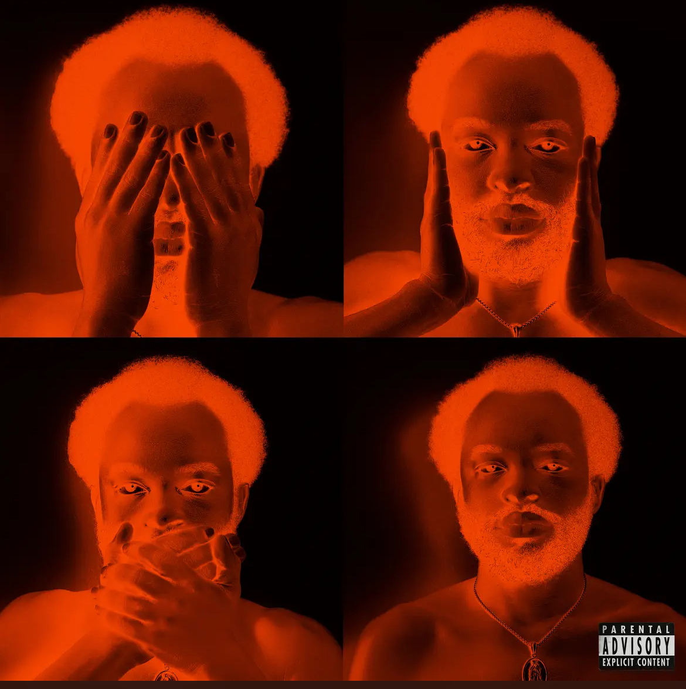

专辑介绍
《Chasing Wind》是Tim lyre于2023年11月17日发行的专辑，融合电子与灵魂乐，旋律轻盈，节奏感强，适合夜晚聆听。
作曲: Cj obassey / Tay Iwar / Timothy Oyesanya
And after all you did
It feels like chasing wind
You still don't have the bills
To pay for your sins
And back when it started
You thought that it would be
A dream reality
But nothing's ever what it seems
Sometimes life come around
And it hit you from both sides
One minute you're up
Then you're down in no time
Takes a lot for me to get back to my right mind
Someone tell the devil he can never control mine
Melodies a come from Jah
And I stay connected no matter how far
No man fi ever interrupt the divine
Pour the oil upon me and make me forehead shine like Woah
I hope my mama knows that I'll be alright
Cause every day I see the worry in her eyes
But when I make it to the highest height
I hope the moment will be frozen in time
So they can all see your boy done did it
And there can never be another like he
Been manifesting what she praying for me
Enemies all try fashion different weapons
Dem no fi ever prosper
Nuffa dem a know say Timmy Turnup
Afi mashup d place in seconds
Dem no fit ever stop am
This a healing music
I'm a musical doctor medicate your soul
While the riddim is proper
Highly recommended fi your sons and daughters
Ain't nobody make 'em feel this way since Chaka
Deep inna the chakra yuh
Many things wey man dey see, we no fit talk am finish
But we still gonna keep it movin with enough confidence
Did it the most
Did it the best
Did it with too much finesse
So you can see I'm not the type that you could try to finesse
Oh no
And if you got a problem
I'll be with my dargs dem
You might not last a day inna the place we come from
You better keep running and maybe
You'll get to where you wanna go too
It's what they told you
And after all you did
It feels like chasing wind
You still don't have the bills
To pay for your sins
And back when it started
You thought that it would be
A dream reality
But nothing's ever what it seems